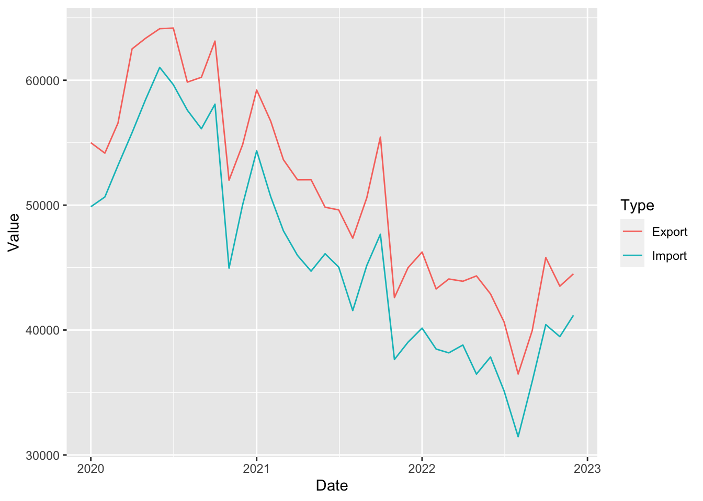
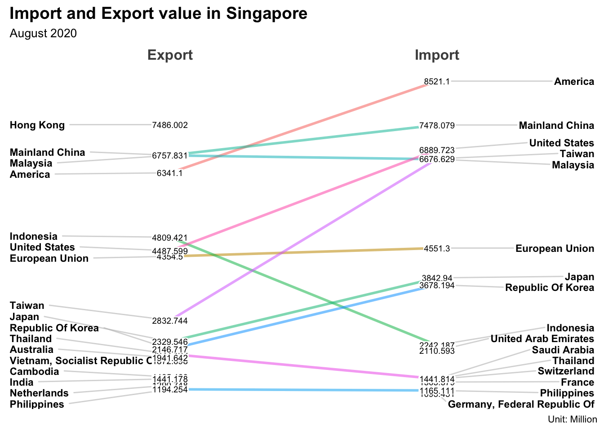
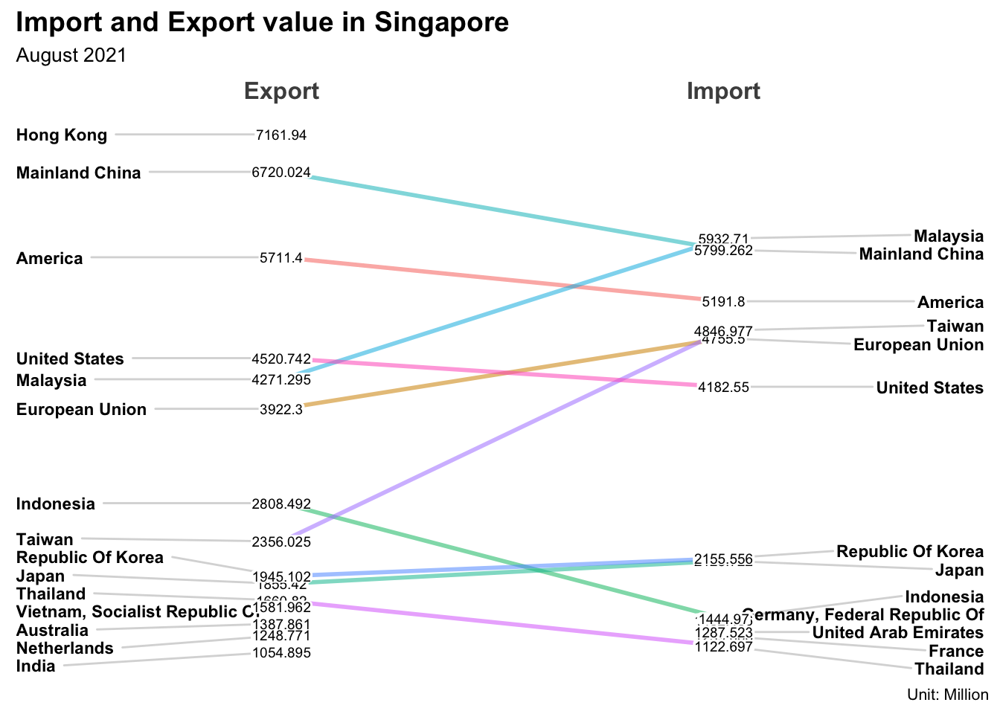
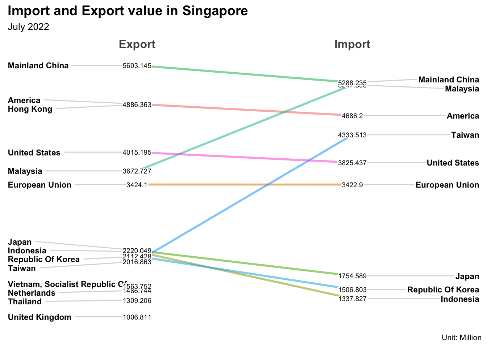
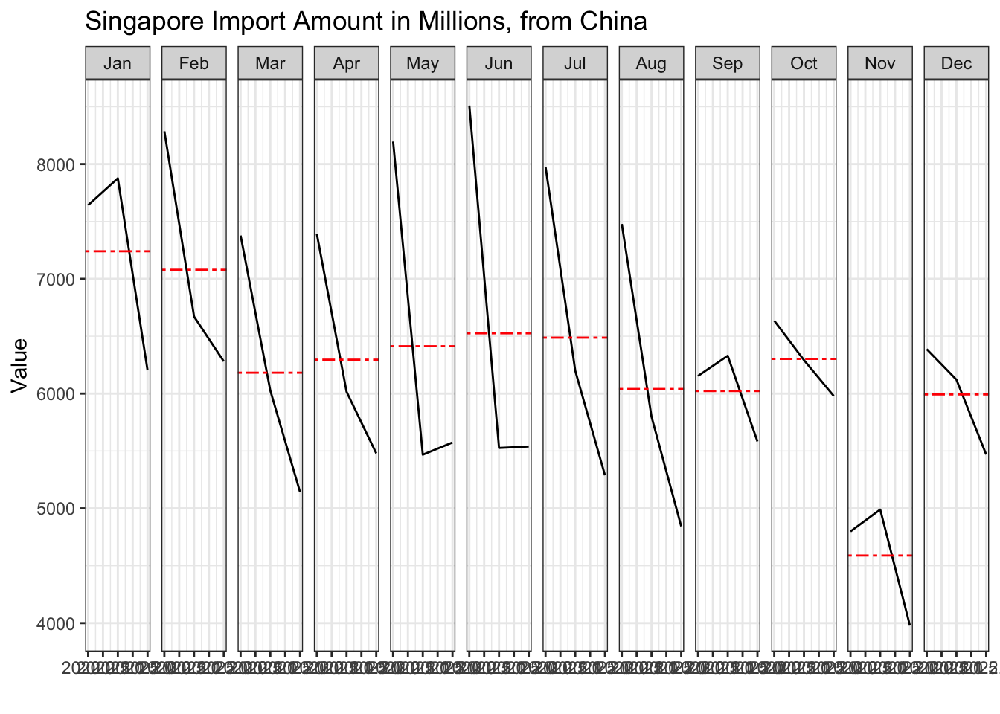
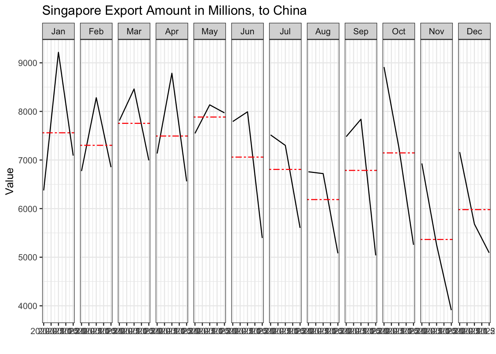

pacman::p_load(scales, viridis, lubridate, ggthemes, gridExtra, readxl, knitr, data.table,tidyverse,dplyr, readxl)Take Home Exercise4
Motivation
This take home activity is purposed on analysing the impact of COVID19 as well as the global economic and political dynamic in 2022 on Singapore bi-lateral trade (i.e. Import, Export and Trade Balance). Data can be acquired from
https://tablebuilder.singstat.gov.sg/statistical-tables/downloadMultiple/1JmxrUUC_0a26wjZN4FFXw.
The study period should be between January 2020 to December 2022.
Import the data and load library.
Original data contains quite a lot description information, we only keep the data table with import and export records. For each dataset, we take out records from 2020 Jan t0 2022 Jan, and set all value unit to Millions.
df1 <- read_excel("data/outputFile.xlsx", sheet = ("T1"))
df2 <- read_excel("data/outputFile.xlsx", sheet = ("T2"))
df1 <- na.omit(df1)
df1<- data.frame(t(df1))
df1[1,1] <- "Date"
colnames(df1) <- as.character(unlist(df1[1,]))
df1 <- slice(df1, -1)
df1$Date <- gsub(" ", "-", df1$Date)
df1 <- df1[2:37,]
df1$Date <- seq(as.Date("2020-01-01"), as.Date("2022-12-01"), by = "month")
df1[,2:120] <- lapply(df1[,2:120], function(x) as.numeric(gsub("[^[:digit:].-]", "", x)))
df1 <- rownames_to_column(df1, var = "row_index")
df1 <- df1[,2:121]
for (i in 2:120){
temp <- colnames(df1)[i]
if (grepl("Thousand", temp)){
df1[,i] = df1[,i]/1000
}
new_colname <- gsub("\\(.*?\\)", "", temp)
colnames(df1)[i] <- new_colname
}
df2 <- na.omit(df2)
df2<- data.frame(t(df2))
df2[1,1] <- "Date"
colnames(df2) <- as.character(unlist(df2[1,]))
df2 <- slice(df2, -1)
df2$Date <- gsub(" ", "-", df2$Date)
df2 <- df2[2:37,]
df2$Date <- seq(as.Date("2020-01-01"), as.Date("2022-12-01"), by = "month")
df2[,2:120] <- lapply(df2[,2:92], function(x) as.numeric(gsub("[^[:digit:].-]", "", x)))
df2 <- rownames_to_column(df2, var = "row_index")
df2 <- df2[,2:93]
for (i in 2:92){
temp <- colnames(df2)[i]
if (grepl("Thousand", temp)){
df2[,i] = df2[,i]/1000
}
new_colname <- gsub("\\(.*?\\)", "", temp)
colnames(df2)[i] <- new_colname
}
df3 <- pivot_longer(df1, cols = 2:120, names_to = "Country",values_to = "Value")
df4 <- pivot_longer(df2, cols = 2:92, names_to = "Country",values_to = "Value")
df3$Type <- rep("Import", 4284)
df4$Type <- rep("Export", 3276)
df_combined <- rbind(df3,df4)Analysis
Preview the combined data. We can see that the overall trend is decreasing, but Export is alwasy higher than Import. Singapore is still earning morning from internaltional trades during COVID period.
df_combined %>%
filter(Country %in% c("Total Merchandise Exports ","Total Merchandise Imports ")) %>%
ggplot()+
geom_line(aes(x=Date,y=Value, color=Type))
From the graph above, we noticed that there are 3 significant fluctuation: 2020 Aug, 2021 Aug and 2022 July. We perform a slopegraph to view those 3 periods to identify who is causing such fluctuation.
df_combined %>%
filter(Date == "2020-08-01")%>%
filter(!(Country %in% c("Total Merchandise Exports ","Total Merchandise Imports ", "Asia ","Europe ", "Oceania ")))%>%
filter(Value > 1000) %>%
CGPfunctions::newggslopegraph(Type, Value, Country,
Title = "Import and Export value in Singapore",
SubTitle = "August 2020",
Caption = "Unit: Million")
df_combined %>%
filter(Date == "2021-08-01")%>%
filter(!(Country %in% c("Total Merchandise Exports ","Total Merchandise Imports ", "Asia ","Europe ", "Oceania ")))%>%
filter(Value > 1000) %>%
CGPfunctions::newggslopegraph(Type, Value, Country,
Title = "Import and Export value in Singapore",
SubTitle = "August 2021",
Caption = "Unit: Million")
df_combined %>%
filter(Date == "2022-07-01")%>%
filter(!(Country %in% c("Total Merchandise Exports ","Total Merchandise Imports ", "Asia ","Europe ", "Oceania ")))%>%
filter(Value > 1000) %>%
CGPfunctions::newggslopegraph(Type, Value, Country,
Title = "Import and Export value in Singapore",
SubTitle = "July 2022",
Caption = "Unit: Million")
We can see that Mainland China is leading the Trading amount. Moving on we do a cycle plot on the biggest market for SG.
df5 <- df1
df6 <- df2
df5$month <- factor(month(df5$Date),
levels=1:12,
labels=month.abb,
ordered=TRUE)
df5$year <- year(ymd(df5$Date))
China <- df5 %>%
select("Mainland China ",
month,
year)
hline.data <- China %>%
group_by(month) %>%
summarise(avgvalue = mean(`Mainland China `))
ggplot() +
geom_line(data=China,
aes(x=year,
y=`Mainland China ` ,
group=month),
colour="black") +
geom_hline(aes(yintercept=avgvalue),
data=hline.data,
linetype=6,
colour="red",
size=0.5) +
facet_grid(~month) +
labs(axis.text.x = element_blank(),
title = "Singapore Import Amount in Millions, from China") +
xlab("") +
ylab("Value")
df6$month <- factor(month(df6$Date),
levels=1:12,
labels=month.abb,
ordered=TRUE)
df6$year <- year(ymd(df6$Date))
China <- df6 %>%
select("Mainland China ",
month,
year)
hline.data <- China %>%
group_by(month) %>%
summarise(avgvalue = mean(`Mainland China `))
ggplot() +
geom_line(data=China,
aes(x=year,
y=`Mainland China ` ,
group=month),
colour="black") +
geom_hline(aes(yintercept=avgvalue),
data=hline.data,
linetype=6,
colour="red",
size=0.5) +
facet_grid(~month) +
labs(axis.text.x = element_blank(),
title = "Singapore Export Amount in Millions, to China") +
xlab("") +
ylab("Value")
We can see that there is a significant drop down for both import and export for China market. However, the fluctuation of export donot look like casued by China market.